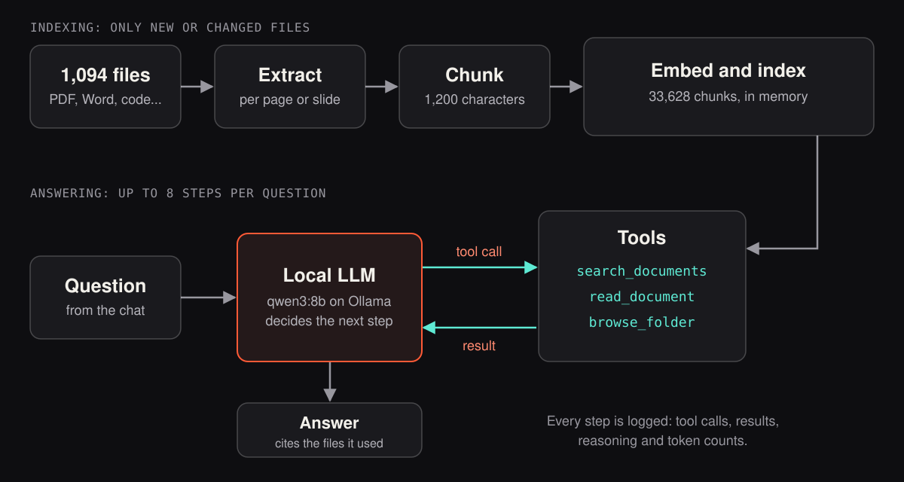

Two years of university work in one folder, and a small model on my own GPU that decides for itself how to search it. No framework, no cloud, and nothing leaves the machine.
Keyword search can't answer "what was the main conclusion of my graduation project?"
So the model gets tools, and chooses what to do next until it can answer.

Semantic search across all passages, optionally limited to one folder. Results come with file path and page.
Opens one whole file, for questions like summarising a report. Long files are truncated to protect the context window.
Lists a folder like a file explorer. Questions such as "which courses did I take?" are about structure, not content.
What it isn't yet: so far I have tested it by hand on real questions, without a formal benchmark. That is why this page shows no accuracy number.